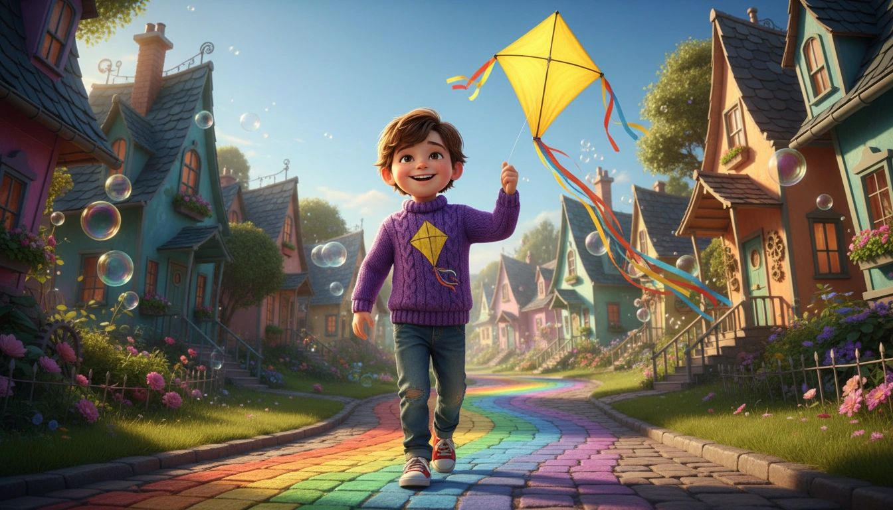
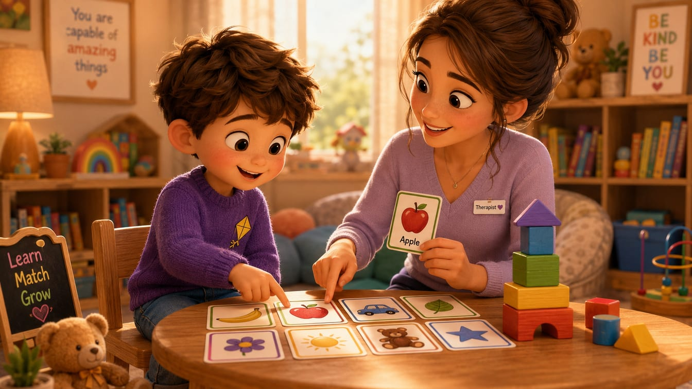
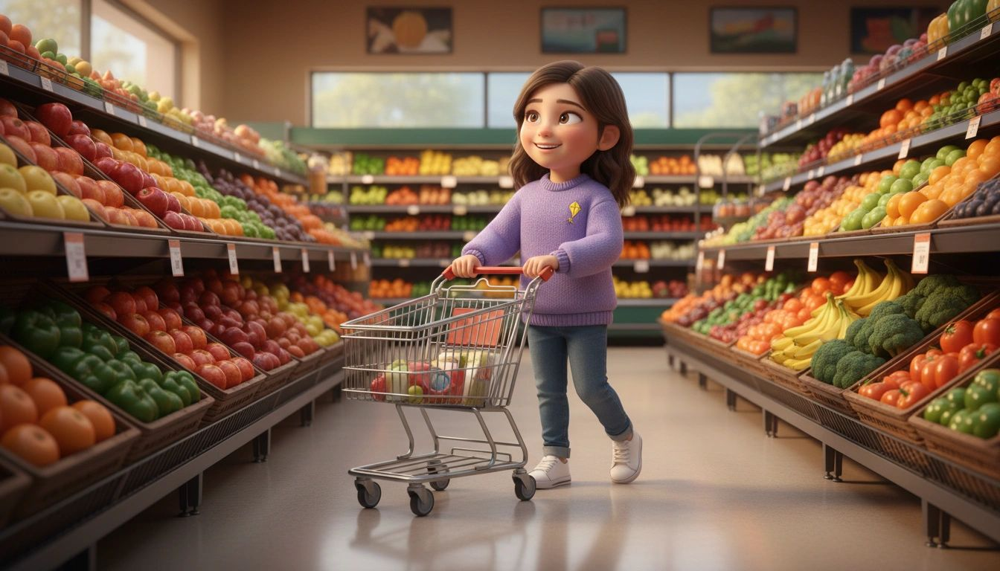
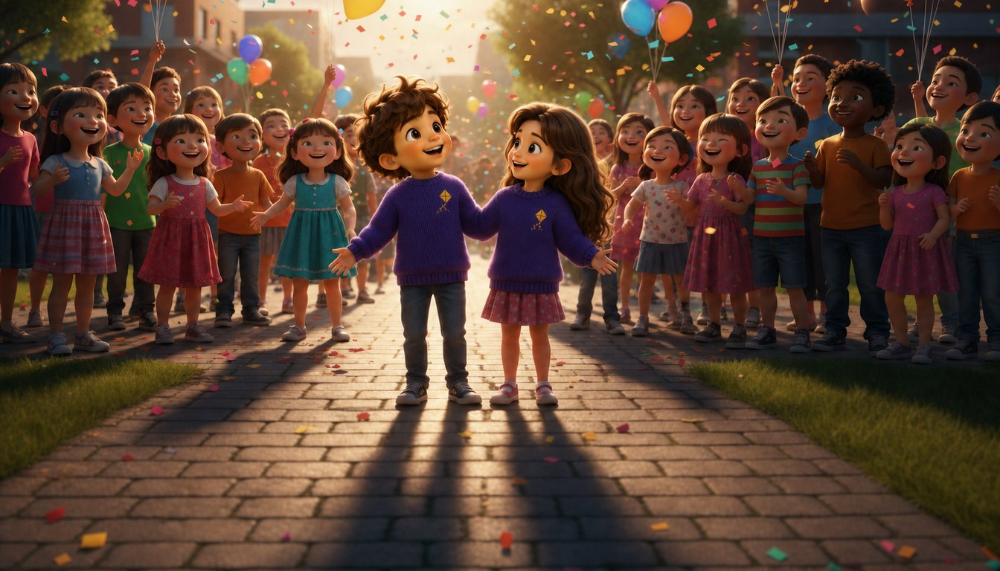
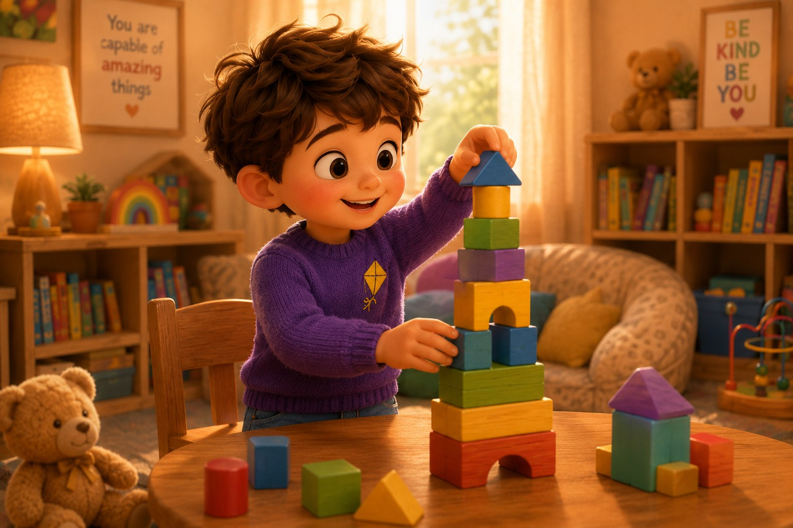

Jack & Jenna's Storybook
Turn the pages of Jack and Jenna's journey to see how compassionate, play-based ABA therapy helps children grow, learn, and thrive.
Every Child Has a Story — We Help Them Write It.
Flip through Jack and Jenna's journey to see how compassionate, play-based ABA therapy helps children grow, learn, and thrive.
"Every journey begins with one small step."

Jack & Jenna's
Journey
A storybook about growing, learning, and becoming your best self.

Every journey begins with one small step.
Compassionate, ethical care rooted in ABA. Supporting every child's journey every step of the way.
Journey
What We Focus On

Jack's Learning Journey
Jack is learning new skills every day! With the right support, he's gaining confidence and discovering how amazing he can be.
Skills Jack Is Building
Every small step today leads to big victories tomorrow.

Jenna's Growing Independence
Jenna is building the skills she needs for today and preparing for tomorrow. Every step forward brings her closer to her goals.
Skills Jenna Is Building
Every new skill is another step toward independence.
Jenna Loves to Learn
With her dedicated therapist by her side, Jenna is mastering new skills through play, practice, and lots of encouragement.
What Jenna Is Working On
Learning is more fun when someone believes in you.

Jack & Jenna Make Friends
ABA therapy helps Jack and Jenna build the social skills to connect, play, and belong. Watch them shine!
Social Skills Jack & Jenna Are Building
Every child deserves to feel like they belong.

Building a Strong Foundation
Through play, practice, and encouragement, Jack is building the foundation he needs to thrive.
On Jack's Path
We celebrate every milestone — big or small!
Preparing for What's Next
Jenna is exploring her interests, building real-world skills, and gaining the confidence to create the life she wants.
On Jenna's Path
Empowered today. Prepared for tomorrow.
Different Paths.
Same Destination.
Jack and Jenna have their own unique journeys, but they're both heading toward bright futures filled with possibilities.
Every journey matters.
Every step counts.
We're here for all of it. 💜
Use ← → arrow keys to flip pages
Ready to start your child's journey?
Contact us today for a free consultation. Our team is here to answer your questions and guide you every step of the way.